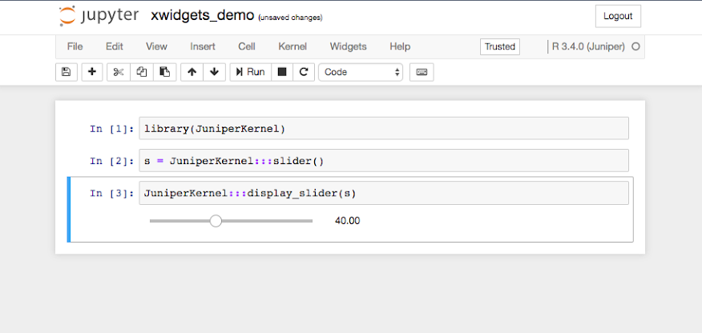
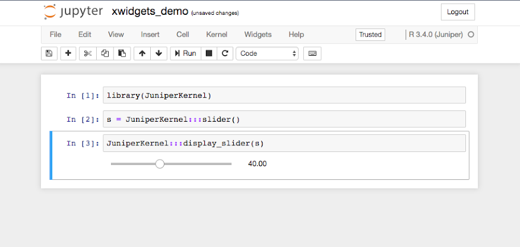
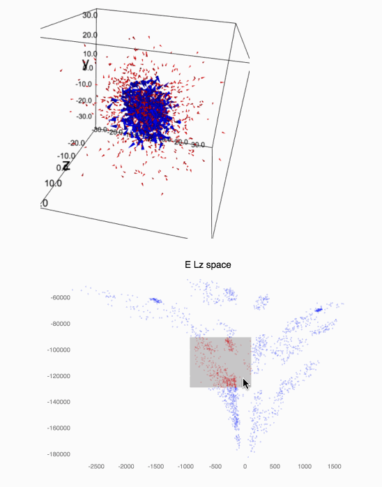
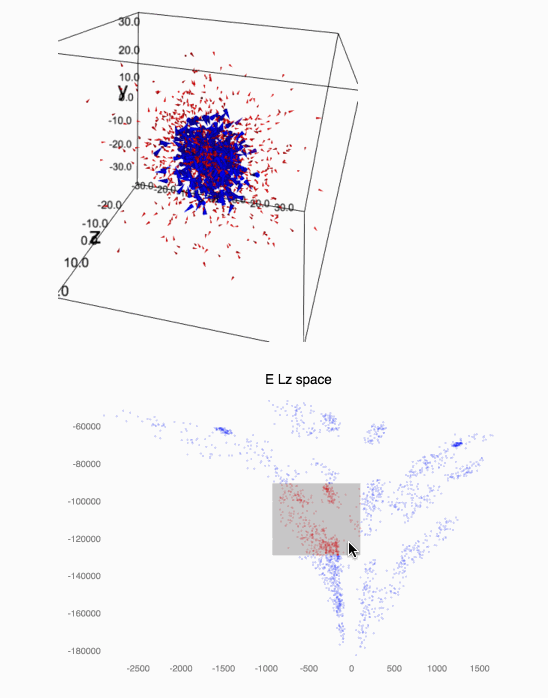

Axel Naumann

Vassil Vassilev


@SylvainCorlay @QuantStack
QuantStack
Sylvain Corlay
Beyond the Jupyter notebook, Project Jupyter is a collection of protocols and standards for scientic computing
The "HTTP" of scientific computing...

In fact, a kernel is merely an executable implementing an inter-process communication protocol.
Non-python kernels should not require the Python runtime.
The current implementation of ipykernel cannot process control messages while code is being executed.


A kernel for the C++ programming language based on cling
Axel Naumann
Vassil Vassilev

Demo of xeus-cling
Another area where Jupyter shines is Jupyter interactive widgets

Jupyter Widgets: MVC pattern

Jupyter Widgets: A thick front-end and a thin back-end

The foundations for a C++ backend for Jupyter interactive widgets
xproperty
xwidgets

live demo of xwidgets
| bqplot |  |
| ipyleaflet |  |
| pythreejs |  |
| ipyvolume |  (upcoming) (upcoming) |
Note: mention blog post on Interpreted C++ for GIS with Jupyter.

xpropertyis the implementation of the observer pattern powering
xwidgets.
It is to xwidgets what traitlets are to ipywidgets.
live demo of xproperty
| xeus | https://github.com/QuantStack/xeus | https://xeus.readthedocs.io |
| xeus-cling | https://github.com/QuantStack/xeus-cling | https://xeus-cling.readthedocs.io |
| xproperty | https://github.com/QuantStack/xproperty | https://xproperty.readthedocs.io |
| xwidgets | https://github.com/QuantStack/xwidgets | https://xwidgets.readthedocs.io |
| xleaflet | https://github.com/QuantStack/xleaflet | https://xleaflet.readthedocs.io |
| xplot | https://github.com/QuantStack/xplot | https://xplot.readthedocs.io |
| xthreejs (alpha) | https://github.com/QuantStack/xthreejs | |
| xwebrtc (alpha) | https://github.com/QuantStack/xwebrtc | |
| xvolume (alpha) | (upcoming) |

By Spencer Aiello
 

See also the blog post on Project Jupyter's blog: Interactive Workflows for C++ with Jupyter

The three main languages of data science


all have concepts of
but with slightly different semantics and incompatible in-memory representation
Data Structures for Data Science

On November 9th, 2015, key developers from the R and Python ecosystems gathered in Berkeley for a workshop to explore data structures across programming languages and Packages.

What would it look like?
The One Tensor to Rule them All cannot be just one container implementation.
Instead, it has to be a flexible expression system in which any data structure can be plugged, offering the most expressive and flexible API to the users.
The Lazy Tensor Algebra Expression System
A C++ template library for multi-dimensional array manipulation
Followings the idioms of the C++ STL
(iterator pairs, clear value semantics)
Python bindings to enable xtensor APIs on numpy arrays.

Julia bindings to enable xtensor APIs on Julia arrays.

R bindings to enable xtensor APIs on R arrays.

Cookiecutter projects for authoring of Python, Julia, and R extensions.

BLAS bindings to enable BLAS operations on xtensor expressions.

SIMD acceleration kernels.

Ever heard of numpy ?
Python 3 - numpy
C++ 14 - xtensor
np.array([[3, 4], [5, 6]])
arr.reshape([3, 4])
xt::xarray<double>({{3, 4}, {5, 6}})
xt::xtensor<double, 2>({{3, 4}, {5, 6}})
arr.reshape({3, 4});
np.linspace(1.0, 10.0, 100)
np.logspace(1.0, 10.0, 100)
np.arange(3, 7)
np.eye(4)
np.zeros([3, 4])
np.ones([3, 4])
xt::linspace<double>(1.0, 10.0, 100)
xt::logspace<double>(1.0, 10.0, 100)
xt::arange(3, 7)
xt::eye(4)
xt::zeros<double>({3, 4})
xt::ones<double>({3, 4})
Python 3 - numpy
C++ 14 - xtensor
a[:, np.newaxis]
a[:5, 1:]
a[5:1:-1, :]
np.broadcast(a, [4, 5, 7])
np.vectorize(f)
a[a > 5]
a[[0, 1], [0, 0]]
xt::view(a, xt::all(), xt::newaxis())
xt::view(a, xt::range(_, 5), xt::range(1, _))
xt::view(a, xt::range(5, 1, -1), xt::all())
xt::broadcast(a, {4, 5, 7})
xt::vectorize(f)
xt::filter(a, a > 5)
xt::index_view(a, {{0, 0}, {1, 0}})
np.sum(a, axis=[0, 1])
np.sum(a)
np.prod(a, axis=1)
np.prod(a)
np.mean(a, axis=1)
np.mean(a)
xt::sum(a, {0, 1})
xt::sum(a)
xt::prod(a, {1})
xt::prod(a)
xt::mean(a, {1})
xt::mean(a)
Python 3 - numpy
C++ 14 - xtensor
np.where(a > 5, a, b)
np.where(a > 5)
np.any(a)
np.all(a)
np.logical_and(a, b)
np.logical_or(a, b)
xt::where(a > 5, a, b)
xt::where(a > 5)
xt::any(a)
xt::all(a)
a && b
a || b
np.absolute(a)
np.exp(a)
np.sqrt(a)
np.cos(a)
np.cosh(a)
scipy.special.erf(a)
np.isnan(a)
xt::abs(a)
xt::exp(a)
xt::sqrt(a)
xt::cos(a)
xt::cosh(a)
xt::erf(a)
xt::isnan(a)
Python 3 - numpy
C++ 14 - xtensor
np.random.seed(0)
np.random.randn(10, 10)
np.random.randint(10, 10)
np.random.rand(3, 4)
xt::random::seed(0)
xt::random::randn<double>({10, 10})
xt::random::randint<int>({10, 10}})
xt::random::rand<double>({3, 4}})
np.stack([a, b, c], axis=1)
np.concatenate([a, b, c], axis=1)
xt::stack(xtuple(a, b, c), 1)
xt::concatenate(xtuple(a, b, c), 1)
Lazy evaluation
res does not hold any value, nothing is evaluated ...
xarray<double> a, b, c;
// ... initialization of a, b and c ...
auto res = sqrt(cos(a) + sin(b)) * c;
... until assigned to a container ...
xarray<double> d = res;
// or
xarray<double> d = sqrt(cos(a) + sin(b)) * c;
... or upon access
// Assuming res is a 2D tensor
double d = res(4, 2);
res is an expression

Expression system
Client code
xarray<double> a, b, c;
// ... initialization of a, b and c ...
xarray<double> res = sqrt(cos(a) + sin(b)) * c;
Traditional implementation
xarray<double> tmp1 = cos(a);
xarray<double> tmp2 = sin(b);
xarray<double> tmp3 = tmp1 + tmp2;
xarray<double> tmp4 = sqrt(tmp3);
xarray<double> res = tmp4 * c;
xtensor generated implementation
xarray<double> res(broadcast_shape(a, b, c));
for(size_t i = 0; i < res.shape()[0]; ++i)
res(i) = sqrt(cos(a(i)) + sin(b(i))) * c(i);
Expression system
Client code
xarray<double> a, b, c;
// ... initialization of a, b and c ...
double res = (sqrt(cos(a) + sin(b)) * c)(4, 2);
The traditional implementation is equivalent to
xarray<double> tmp1 = cos(a);
xarray<double> tmp2 = sin(b);
xarray<double> tmp3 = tmp1 + tmp2;
xarray<double> tmp4 = sqrt(tmp3);
xarray<double> tmp5 = tmp4 * c;
double d = tmp5(4, 2);
The xtensor generated assembly is equivalent to
double d = sqrt(cos(a(4, 2)) + sin(b(4, 2)))
* c(4, 2);
Broadcasting
xarray<int> a = {{1, 2, 3, 4},
{5, 6, 7, 8},
{9, 10, 11, 12}};
xarray<int> b = { 1, 3, 5, 7};

xarray<int> res = a + b;

Broadcasting
xarray<double> a = {1., 2., 3., 4.};

auto res = xt::broadcast(a, {3, 4});

xarray<double> a, b, c;
// ... initialization of a, b, and c ...
auto res = broadcast(a + b * c, {3, 4});

Iteration
for x in np.nditer(a)
for(auto it=a.begin(); it!=a.end(); ++it)
a with a prescribed broadcasting shape
a.begin({3, 4})
a.end({3, 4})
a in a column-major fashion
a.template begin<layout_type::column_major>()
a.template end<layout_type::column_major>()
a in a column-major fashion with a prescribed broadcasting shape
a.template begin<layout_type::column_major>({3, 4})
a.template end<layout_type::column_major>({3, 4})
Views
xarray<int> a = {{1, 2, 3, 4},
{5, 6, 7, 8},
{9, 10, 11, 12}};
auto res = view(a, range(0, 3, 2),
range(0, 3, 2));

a(0, 0) = 0;
assert(res(0, 0) == 0);
res(1, 1) = 20;
assert(a(2, 2)) == 20);

Views
xarray<int> a = {{1, 2, 3, 4},
{5, 6, 7, 8},
{9, 10, 11, 12}};
auto res = view(a, 1, all());

xarray<int> a = {{1, 2, 3, 4},
{5, 6, 7, 8},
{9, 10, 11, 12}};
auto res = view(a, 1, range(1, _));

Views
xarray<int> a = {{21, 2, 3, 4},
{ 5, 6, 27, 8},
{ 9, 10, 31, 12}};
auto res = indexview(a, {{0, 0},
{1, 2},
{2, 2}});

xarray<int> a = {{21, 2, 3, 4},
{ 5, 6, 27, 8},
{ 9, 10, 31, 12}};
auto res = filter(a, a > 20);
res += 5;

Missing values
xtensor_optional<int> a =
{{ 1, 2 },
{ 3, missing<int>() }};
xtensor<int> b = {{ 1, 2 },
{ 3, 4 }};

auto res = a + b;
auto hv = has_value(a + b);

false || missing<bool>.
With conda
conda install xtensor -c conda-forge

With Debian
apt-get install xtensor-dev

From source with cmake
cmake -DCMAKE_INSTALL_PREFIX=/path/to/prefix /source/dir
make install
http://quantstack.net/xtensor
A Simple Python extension (1/2)
C++: Using an algorithm from the STL on a numpy array
#include <numeric> // Standard library import for std::accumulate
#include "pybind11/pybind11.h" // Pybind11 import to define Python bindings
#include "xtensor/xmath.hpp" // xtensor import for the C++ universal functions
#define FORCE_IMPORT_ARRAY // numpy C api loading
#include "xtensor-python/pyarray.hpp" // Numpy bindings
double sum_of_sines(xt::pyarray<double>& m)
{
auto sines = xt::sin(m);
// sines does not actually hold any value, which are only computed upon access
return std::accumulate(sines.begin(), sines.end(), 0.0);
}
PYBIND11_PLUGIN(xtensor_python_test)
{
xt::import_numpy();
pybind11::module m("xtensor_python_test", "Test module for xtensor python bindings");
m.def("sum_of_sines", sum_of_sines,
"Computes the sum of the sines of the values of the input array");
return m.ptr();
}
A simple Python extension (1/2)
Python: Using an algorithm from the STL on a numpy array
import numpy as np
import xtensor_python_test as xt
a = np.arange(15).reshape(3, 5)
xt.sum_of_sines(v)
A simple Python extension (2/2)
C++: Create a universal function from a C++ scalar function
#include "pybind11/pybind11.h"
#define FORCE_IMPORT_ARRAY
#include "xtensor-python/pyvectorize.hpp"
#include <numeric>
#include <cmath>
namespace py = pybind11;
double scalar_func(double i, double j)
{
return std::sin(i) - std::cos(j);
}
PYBIND11_PLUGIN(xtensor_python_test)
{
xt::import_numpy();
py::module m("xtensor_python_test", "Test module for xtensor python bindings");
m.def("vectorized_func", xt::pyvectorize(scalar_func), "");
return m.ptr();
}
A simple Python extension (2/2)
Python: Create a numpy-style universal function from a C++ scalar function
import numpy as np
import xtensor_python_test as xt
x = np.arange(15).reshape(3, 5)
y = [1, 2, 3, 4, 5]
xt.vectorized_func(x, y)
A Simple Julia extension (1/2)
C++: Using an algorithm from the STL on a Julia array
#include <numeric> // Standard library import for std::accumulate
#include "jlcxx/jlcxx.hpp¨ // CxxWrap import to define Julia bindings
#include "xtensor-julia/jltensor.hpp" // Import the jltensor container definition
#include "xtensor/xmath.hpp" // xtensor import for the C++ universal functions
double sum_of_sines(xt::jltensor<double, 2> m)
{
auto sines = xt::sin(m); // sines does not actually hold values.
return std::accumulate(sines.cbegin(), sines.cend(), 0.0);
}
JULIA_CPP_MODULE_BEGIN(registry)
jlcxx::Module mod = registry.create_module("xtensor_julia_test");
mod.method("sum_of_sines", sum_of_sines);
JULIA_CPP_MODULE_END
A simple Julia extension (1/2)
Julia: Using an algorithm from the STL on a Julia array
using xtensor_julia_test
arr = [[1.0 2.0]
[3.0 4.0]]
sum_of_sines(arr)
A simple Julia extension (2/2)
C++: Create a numpy-style universal function from a C++ scalar function
#include "jlcxx/jlcxx.hpp"
#include "xtensor-julia/jlvectorize.hpp"
double scalar_func(double i, double j)
{
return std::sin(i) - std::cos(j);
}
JULIA_CPP_MODULE_BEGIN(registry)
jlcxx::Module mod = registry.create_module("xtensor_julia_test");
mod.method("vectorized_func", xt::jlvectorize(scalar_func));
JULIA_CPP_MODULE_END
A simple Julia extension (2/2)
Julia: Create a numpy-style universal function from a C++ scalar function
using xtensor_julia_test
x = [[ 0.0 1.0 2.0 3.0 4.0]
[ 5.0 6.0 7.0 8.0 9.0]
[10.0 11.0 12.0 13.0 14.0]]
y = [1.0, 2.0, 3.0, 4.0, 5.0]
xt.vectorized_func(x, y)
A Simple R extension
C++: Using an algorithm from the STL on a R array
// [[Rcpp::export]]
double sum_of_sines(xt::rarray<int> m)
{
auto sines = xt::sin(m); // sines does not actually hold values.
return std::accumulate(sines.cbegin(), sines.cend(), 0.0);
}
A simple R extension
R: Using an algorithm from the STL on a R array
library('xtensor_r_test')
arr <- array(c(c(1, 2), c(3, 4)), dim = c(2, 2)
xtensor_r_test::sum_of_sines(arr)
Generate your packaged xtensor extension

Scientific computing in a polyglot world with xtensor
http://quantstack.net/c++/2017/05/30/polyglot-scientific-computing-with-xtensor.html
Bindings with BLAS libraries
BLAS-based implementation of numpy.linalg
numpy.linalg is main goalSIMD acceleration
xsimd example
(Assuming that AVX is supported)
#include <iostream>
#include "xsimd/xsimd.hpp"
namespace xs = xsimd;
int main(int argc, char* argv[])
{
xs::batch<double, 4> a(1.5, 2.5, 3.5, 4.5);
xs::batch<double, 4> b(2.5, 3.5, 4.5, 5.5);
auto mean = (a + b) / 2;
std::cout << mean << std::endl;
return 0;
}
xsimd: accelerating loops
(This applies to processing including basic math functions from cmath.)
#include <cstddef>
#include <vector>
#include "xsimd/xsimd.hpp"
namespace xs = xsimd;
using vector_type = std::vector<double, xsimd::aligned_allocator<double, XSIMD_DEFAULT_ALIGNMENT>;
void mean(const vector_type& a, const vector_type& b, vector_type& res)
{
std::size_t size = a.size();
constexpr std::size_t simd_size = xsimd::simd_type<double>::size;
std::size_t vec_size = size - size % simd_size;
for(std::size_t i = 0; i < vec_size; i += simd_size)
{
auto ba = xs::load_aligned(&a[i]);
auto bb = xs::load_aligned(&b[i]);
auto bres = (ba + bb) / 2;
bres.store_aligned(&res[i]);
}
for(std::size_t i = vec_size; i < size; ++i)
{
res[i] = (a[i] + b[i]) / 2;
}
}


Generalization of the dataframe data structure

Live demo
What is coming?

Expand on the boost.simd issue
Credits
But it is not over! Next session:
Diving into Jupyter interactive widgets libraries:

Live demo
Live demo
A Jupyter-threejs integration for visualization
By Maarten Breddels
 

Live demo
A Jupyter-d3.js bridge
What's new and coming in latest bqplot?
And of course, the bqviz layer!
A Jupyter-threejs bridge

Live demo

Live demo
Improvements on Sidecar
Live demo

https://{s}.tile.openstreetmap.org/{z}/{x}/{y}.png
P. Soille, A. Burger, D. De Marchi, P. Kempeneers, D.Rodriguez, V. Syrris, V. Vasilev, A versatile data-intensive computing platform for information retrieval from big geospatial data Future Generation Computer Systems, Volume 81, April 2018, Pages 30-40
JEDPP Example

By Maarten Breddels

Live demo